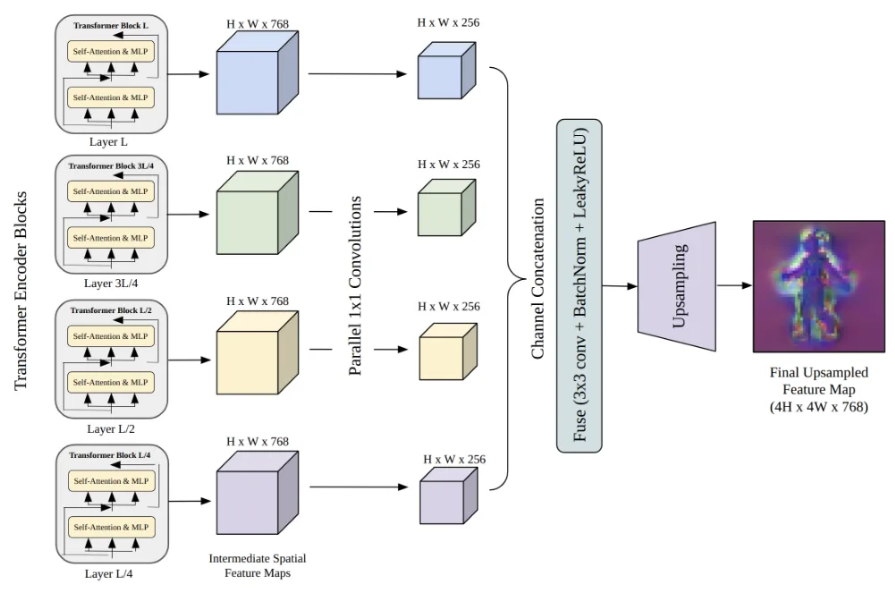
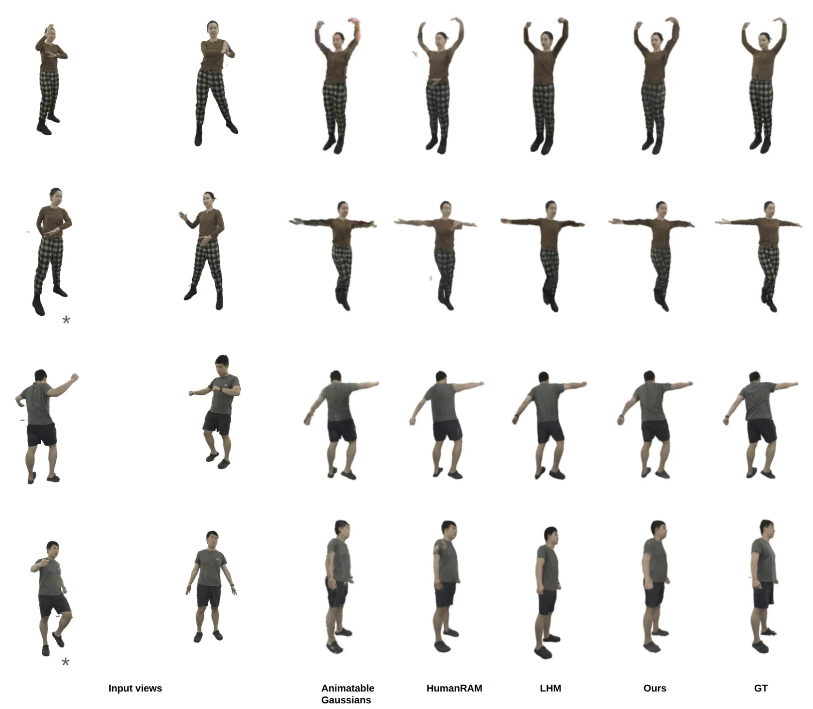
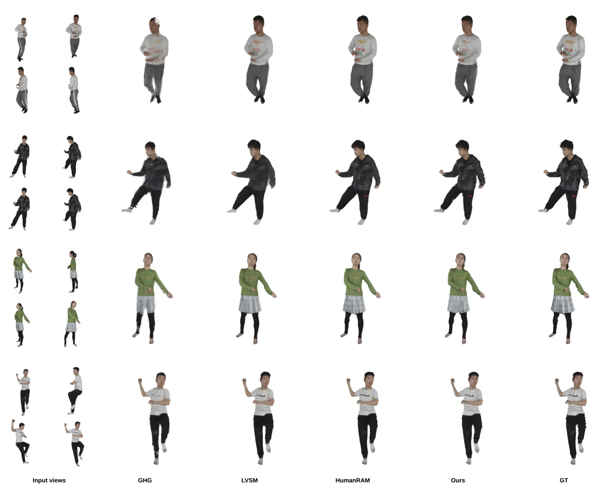
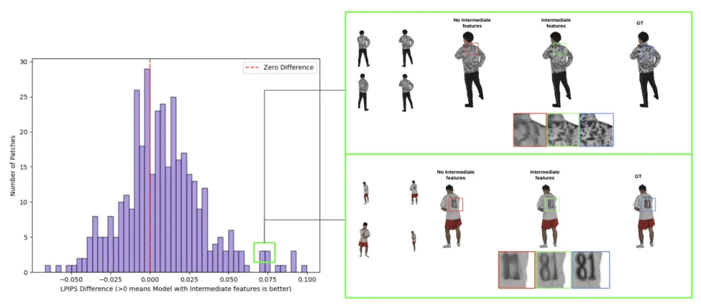
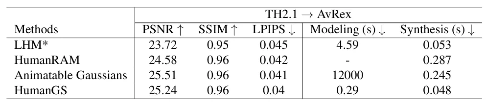
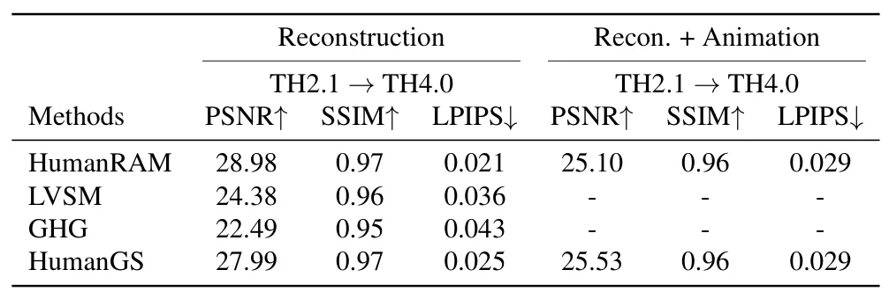
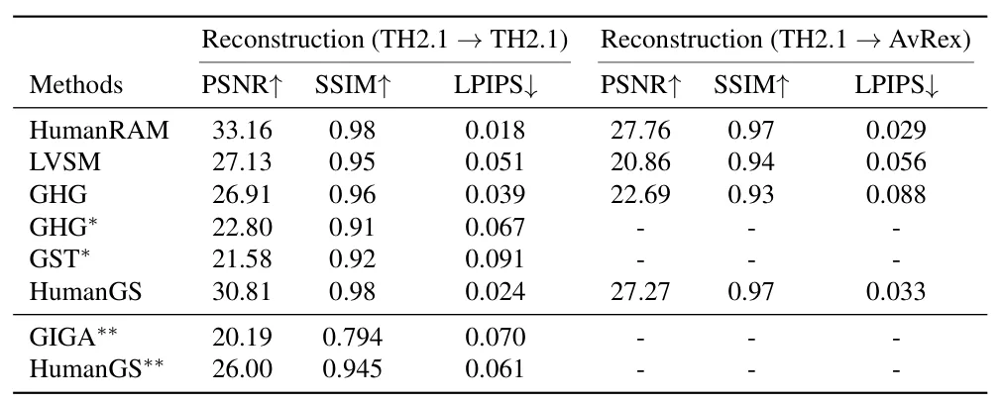

HumanGS：稀疏多视图人体前馈高斯重建与实时动画Real-Time Human Reconstruction and Animation using Feed-Forward Gaussian Splatting
前馈 3DGS、稀疏多视图与显式几何先验结合紧密，并提供代码；领域限定于参数化人体，不直接解决通用场景重建。
一句话工作总结
以 SMPL-X 几何反投影聚合稀疏多视图特征，一次生成可实时动画的 canonical 3D Gaussians。
摘要
HumanGS 从稀疏多视图 RGB 和对应 SMPL-X pose 前馈生成可动画的人体 3D Gaussian representation。简单 Transformer 通过 geometric back-projection 显式关联 SMPL-X 顶点和多尺度图像特征，轻量 MLP 将聚合特征映射为 canonical Gaussian primitives：一个高斯受约束靠近人体表面，其余自由高斯表达服装和头发。结果可直接通过 linear blend skinning 与 Gaussian rasterization 动画，不需针对目标姿态或视图再次推理。模型仅用 THuman2.1 的 10K frames 从头训练，摘要称质量达到或超过先进方法，重建速度提升超过 15 倍；代码和权重已提供。
We present HumanGS, a generalizable feed-forward Gaussian splatting framework for human 3D reconstruction and real-time animation from sparse multi-view RGB images and their associated SMPL-X poses. Unlike prior methods that rely on depth supervision, fixed input views, UV maps, repeated feed-forward inference for each target pose or view, or computationally expensive vertex-to-image cross-attention, HumanGS employs a simple transformer architecture that explicitly associates SMPL-X vertices with multi-scale image features through geometric back-projection. This eliminates the need for large pre-trained human representation models while naturally aggregating complementary information from multiple views. The aggregated vertex features are mapped by a lightweight MLP decoder to a canonical set of 3D Gaussian primitives aligned with SMPL-X vertices. One Gaussian is regularized to remain close to the SMPL-X surface, providing a strong geometric prior and stable correspondence to the parametric body model, while a small set of unconstrained Gaussians per vertex captures geometric details beyond the body surface, such as clothing and hair. The resulting canonical representation is animated efficiently using linear blend skinning and Gaussian rasterization without further network inference. Trained entirely from scratch on only 10K frames from THuman2.1, HumanGS achieves reconstruction quality comparable to or better than state-of-the-art methods while reducing reconstruction time by over 15 times compared to recent transformer-based approaches, enabling real-time animation and interactive applications. Code and pre-trained models are available at https://github.com/Devdoot57/HumanGS .
中文解读摘录
- 作者：Devdoot Chatterjee, Zakaria Laskar, C. V. Jawahar
- 价值判断：展示如何把明确的参数化几何先验与多视图图像特征结合，形成可动画的 canonical Gaussian representation；适合参考一般化前馈 3DGS 设计。
- 技术要点：通过 geometric back-projection 将 SMPL-X 顶点与多尺度图像特征显式关联，轻量 MLP 解码与顶点对齐和自由高斯，再用 linear blend skinning 与 Gaussian rasterization 动画，无需每个新姿态重复网络推理。
- 关键结果与资源：仅用 THuman2.1 的 10K frames 从头训练，摘要称质量达到或超过近期方法、重建速度提升超过 15×；提供代码和预训练模型。
- 链接：arXiv · PDF · 代码
图表/页面预览

{kind=link}

{kind=link}

{kind=link}

{kind=link}

{kind=link}

{kind=link}

{kind=link}
